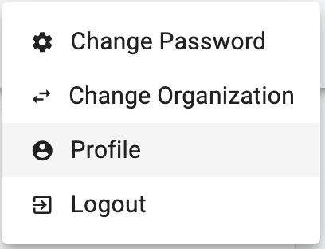
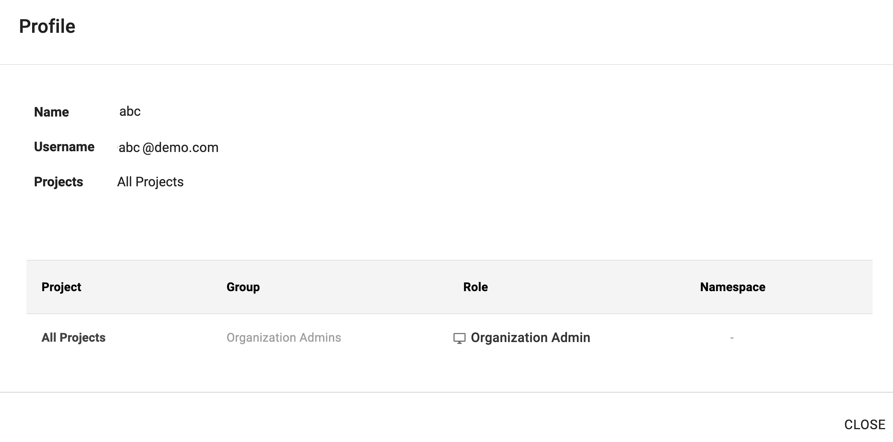
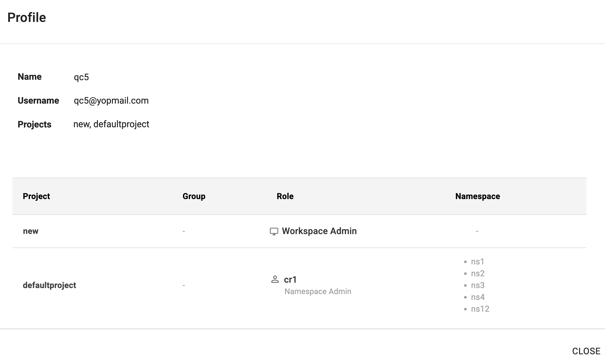
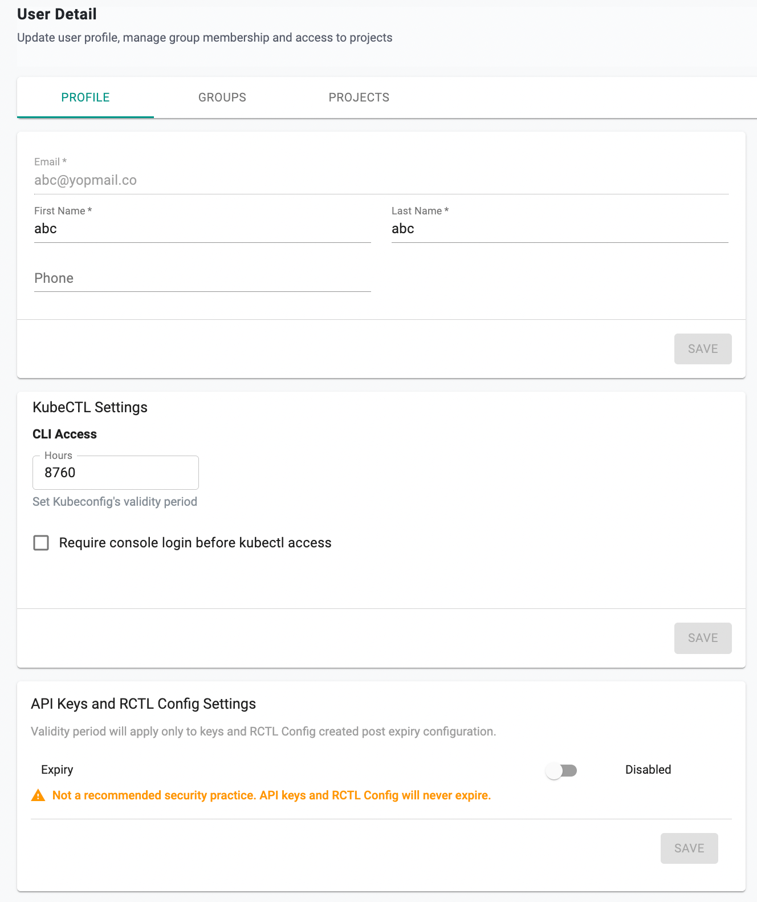
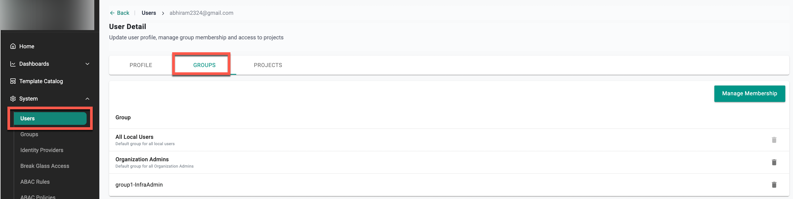
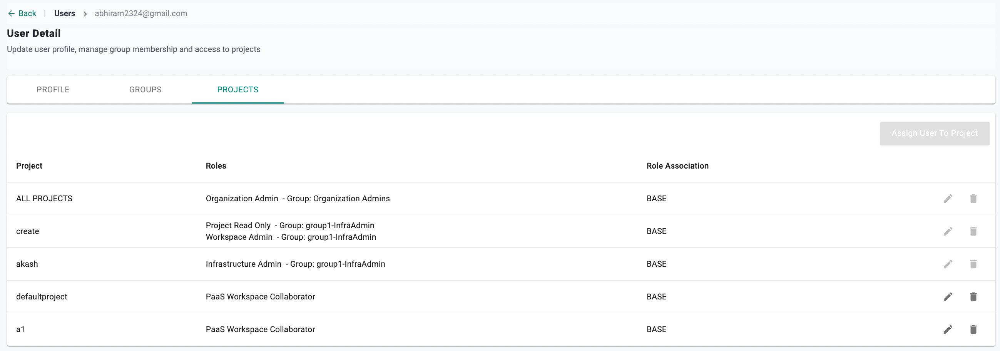
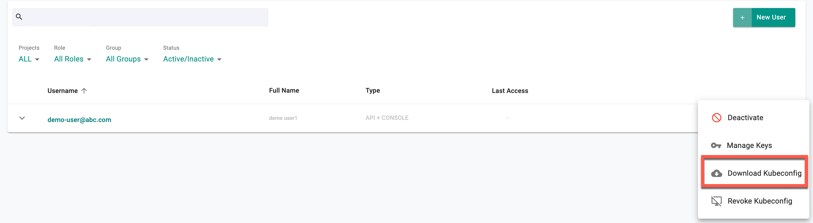
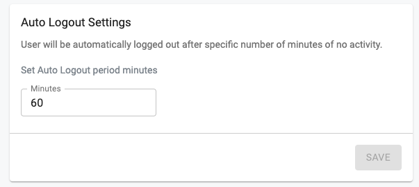

Users
Uniqueness¶
Every user in the Controller (across all Orgs) is associated with a unique email address. A user can be associated with one or more Orgs (tenants).
Local vs SSO Users¶
Users can either be Local Users or IdP Users.
Local Users¶
- Lifecycle of these users is fully managed in the Controller.
- Typically limited to privileged super/root users such as Org Admins.
- Are locally authenticated by the controller.
- MFA is strongly recommended for local users.
IdP Users¶
- Lifecycle of these users is fully managed in the customer's Identity Provider (IdP).
- Typically for all non-privileged users such as developers, operations personnel etc.
- Authentication and MFA is performed by the configured Identity Provider such as Okta, Azure AD, etc.
The diagram below shows the high-level workflow for securing user access with MFA.
flowchart TD
A[User Access Request] --> B{Type of User}
B -->|Local User| C[Prompt for MFA]
C --> E[Calculate Role]
B -- SSO User ----> D[IDP Authenticates User]
D --> E[Calculate Role]
E --> F[RBAC Powered Access]User Profile¶
Users can access and view their profile.
- Click on your Email Address at the top right
- Select Profile

The profile displays your permissions and what you are allowed to do on the platform.
Example 1¶
In this example, the user has:
- Access to all Projects in an Organization
- The Role Organization Admin

Example 2¶
In this example, the user has:
- Access to the projects new and defaultproject
- Roles assigned:
- Base Role: Workspace Admin for the "new" project
- Custom Role: cr1 for the "defaultproject" project, granting access to specific namespaces

Password Policy¶
- Minimum password length of 8 characters
- Reuse of previous passwords is blocked
- Passwords are salted and hashed with strong key derivation functions
- MFA is strongly recommended
- Automatic lockout after consecutive failed login attempts
- Automatic logout after a defined period of inactivity
If you forget your password, use the self-service password reset workflow. You will receive an email with a reset link valid for 72 hours.
Profile Settings¶
From your Profile page, you can:
- Update personal details
- Update kubeconfig validity period
- Manage API Keys and RCTL CLI Config validity period
User-specific settings override global configuration set by the Org Admin.

Groups¶
From the Groups tab in your profile, you can view the groups you are assigned to.

Projects¶
From the Projects tab in your profile, you can view the list of projects you are assigned to, including base or custom roles.

Kubeconfig¶
Users can download kubeconfig files for CLI or API access (if enabled).
- Download Kubeconfig: Use this to authenticate kubectl access.
- If your kubeconfig is revoked (e.g., device lost), you can download a new one once re-enabled.

MFA and Session Settings¶
- If MFA is enabled for your org, you will be prompted to enroll and authenticate with a TOTP authenticator
- After login, sessions are valid for 24 hours
- You may be locked out temporarily after repeated failed login attempts
- Auto logout occurs after the configured inactivity period
